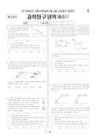

문제지


시험지를 먼저 풀어 보세요. 등급컷·표준점수·난이도는 흐리게 가려 뒀어요.
정답 변경 없음
이의신청 6문항 · 평가원 상세 답변 6문항
평가원 답변
본 문항은 녹말 가수분해효소인 침 아밀라아제가 녹말을 분해하는 소화 작용에 대하여 출제한 문항입니다. 엿당과 포도당은 화학적으로 서로 다른 물질입니다. 엿당이나 녹말은 포도당 분자가 탈수축합반응을 통해 물 분자가 빠져나가면서 글리코시드 결합이 형성되어 생성되는 물질입니다. 엿당은 포도당이 두 분자 결합된 물질이긴 하지만 엿당이 있다고 해서 포도당이 존재하는 것은 아닙니다. 또한 침 속에 들어있는 α-아밀라제는 녹말을 주로 엿당으로 가수분해합니다. 이때 녹말은 포도당으로 가수분해 되지는 않으며, 말토트리오스(3개의 포도당이 2개의 α-1,4결합으로 연결됨)와 알파덱스트린(몇 개의 포도당이 α-1,6와 α-1,4결합으로 연결됨)과 같은 화합물이 남게 됩니다. 이러한 물질은 소장에서 말타아제나 α-덱스트린 가수분해효소에 의해 포도당으로 분해됩니다. 따라서 이 문항은 오류가 없습니다. - 26 -
평가원 답변
본 문항은 식물군락의 천이과정에서 나타나는 군락의 환경과 식물종의 변화 특성에 대해 묻는 문제입니다. 피도는 어떤 일정 지표 면적을 기준으로 그 안에 있는 식물이 차지하는 면적(수관;canopy)을 상대값으로 나타낸 것입니다. 본 문항에서 ‘ㄷ’은 양수 교목림에서 교목의 피도에 대한 것이 아니라 임상(숲 바닥)에 자리 잡는 묘목의 피도에 대한 것입니다. 생존에 강한 빛을 필요로 하는 양수 묘목은 양수교목림의 숲 바닥에서 생육이 어려워지므로 피도가 낮지만, 양수 묘목에 비해 상대적으로 약한 빛에서도 광합성 효율이 높은 음수 묘목은 양수교목림의 숲 바닥에서도 생육이 잘되므로 피도가 높습니다. 따라서 이 문항은 오류가 없습니다.- 33 -
평가원 답변
본 문항은 금속의 반응성에 관한 자료 해석 문제입니다. 그림에서 금속 막대 A를 금속 이온 B의 수용액에 넣었을 때, 시간에 따라 금속 막대의 질량이 증가하고 용액의 전체 이온수는 감소하는 경향성을 나타낸 자료로부터, 금속의 반응성은 A > B이고 금속 이온의 전하는 A > B임을 판단할 수 있습니다. 그렇지만 금속 막대의 초기 질량과 시간에 따른 변화율이 구체적으로 제시되어 있지 않고, 금속 이온 A, B의 전하에 대한 변인통제가 되어 있지 않으므로 주어진 자료만으로 금속 원자 A, B의 상대 질량을 비교할 수 없습니다. 따라서 문항과 정답에 오류가 없습니다.
평가원 답변
본 문항은 산에 염기를 가할 때와 염기에 산을 가할 때 일어나는 중화반응의 중화열에 의한 온도 변화 자료로부터 산과 염기의 농도 비교와 수용액의 반응에 대한 이해도를 평가합니다. 실험에서 사용한 NaOH 수용액의 농도가 같고, (가)와 (나)의 자료에서 NaOH 50mL와 HCl 50mL를 섞은 혼합 용액의 최고 온도가 모두 21.5℃로 같습니다. 이로부터 두 실험에서 사용한 염산의 농도가 동일함을 추론할 수 있습니다. 또한 (가)에서 NaOH 수용액 25mL를 넣었을 때의 온도 변화가 (나)에서 HCl 수용액 25mL를 넣었을 때보다 2배 크므로, NaOH 수용액의 농도가 HCl 수용액보다 2배 크다는 것을 알 수 있습니다. 따라서 문항과 정답에 오류가 없습니다. - 24 -
평가원 답변
본 문항은 운동에너지의 변화량과 마찰력이 한 일을 비교하는 내용을 묻고 있습니다. 물체 A와 B의 운동에너지의 변화량은 이 두 물체에 작용하는 힘이 한 일과 같으며, 이들 물체에 작용하는 힘은 마찰력만 고려하면 됩니다. 마찰력은 A와 수평면 S, 그리고 A와 B 사이에 작용합니다.
A가 등가속도 운동을 하면서 간 거리를 s A, B가 등가속도 운동을 하면서 간 거리를 s B라고 하면, 가속도의 크기는 A가 B보다 크므로 같은 시간동안 B보다 A의 속도가 더 많이 감소합니다. 그러므로 B의 이동거리가 A의 이동거리보다 큽니다. 즉, s B>s A입니다.
이 문항에서 마찰력이 물체 A 또는 B에 한 일은 모두 3개가 있습니다. 1. S가 A에 작용하는 마찰력이 A에 한 일 W12. B가 A에 작용하는 마찰력이 A에 한 일 W23. A가 B에 작용하는 마찰력이 B에 한 일 W3
여기서 주의할 것은 W2와 W3을 구할 때, A가 B에 작용하는 마찰력과 B가 A에 작용하는 마찰력은 작용 반작용 관계로 그 크기는 같으나 힘이 작용하는 동안 A가 이동한 거리와 B가 이동한 거리가 같지 않다는 것입니다. 앞서 언급하였듯이 s B>s A이며, W2 +W3 ≠ 0 입니다.
그러므로 3개의 일을 모두 더한 A와 B의 전체 운동에너지 변화량( W1+ W2+ W3)은 A와 S 사이의 마찰력이 A에 한 일( W1)과 같지 않습니다.
따라서 보기 ㄷ은 틀린 진술이며, 이 문항의 정답은 이상이 없습니다. - 22 -
이의 요지
이의 신청의 주요한 내용은 첫째, 별과 태양이 모두 하루에 지구 주위를 한 바퀴 돌면 시간(계절)에 따른 별자리의 변화가 생기지 않으므로 <보기> ㄴ의 진술이 성립하지 않으며 둘째, 제시문에 나타난 ‘별은 천구 상에 고정되어 있다’는 표현과 ‘태양은 천구 상에서 움직인다’는 표현은 태양이 별에 속하기 때문에 서로 모순되는 표현으로 문제에 오류가 있다는 내용입니다
평가원 답변
본 문항은 프톨레마이오스의 우주관을 논리적으로 해석함으로써 우주관의 변천 과정을 이해하기 위한 문항입니다. 이의 신청의 주요한 내용은 첫째, 별과 태양이 모두 하루에 지구 주위를 한 바퀴 돌면 시간(계절)에 따른 별자리의 변화가 생기지 않으므로 <보기> ㄴ의 진술이 성립하지 않으며 둘째, 제시문에 나타난 ‘별은 천구 상에 고정되어 있다’는 표현과 ‘태양은 천구 상에서 움직인다’는 표현은 태양이 별에 속하기 때문에 서로 모순되는 표현으로 문제에 오류가 있다는 내용입니다. 그러나 이러한 주장은 태양의 일주운동 방향과 연주운동 방향을 혼동하여 생긴 것으로 판단됩니다. 이 우주관에서는 천구와 태양이 지구 주위를 한번 회전하는 동안 태양은 천구보다 약간 느리게 회전하여 결과적으로 그림에 나타낸 연주운동 방향으로 이동하는 것처럼 보이는 것입니다. 계절별 별자리의 변화는 태양의 연주운동 과정에서 나타나는 것이므로 <보기> ㄴ의 진술에는 문제가 없습니다. 두 번째 이의 신청에서 프톨레마이오스의 우주관에서는 별과 태양을 다른 것으로 생각하였으므로 용어와 관련하여 모순되는 내용을 포함하지 않고 있습니다. 따라서 이 문항의 정답에는 이상이 없습니다. - 29 -
발행 기관: 한국교육과정평가원(KICE). 파일 위치: 이 사이트가 보관한 사본. 저작권은 발행 기관에 있습니다. 원본과 다르거나 게시 중단이 필요하면 연락처로 알려 주세요. 등급컷 출처 구분은 데이터 원칙에서 설명합니다.